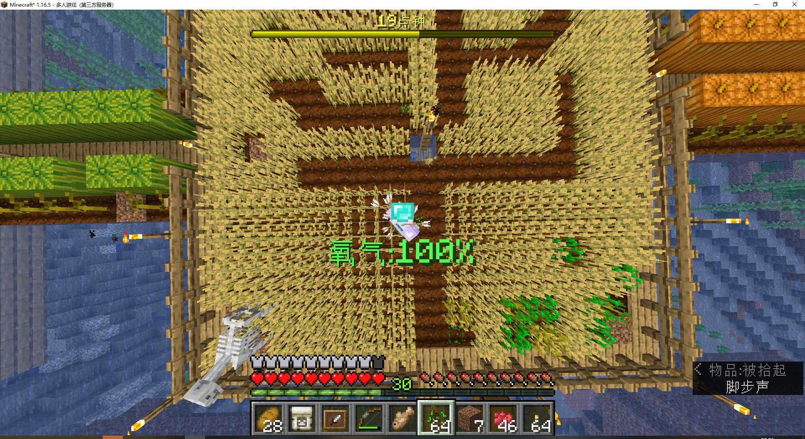
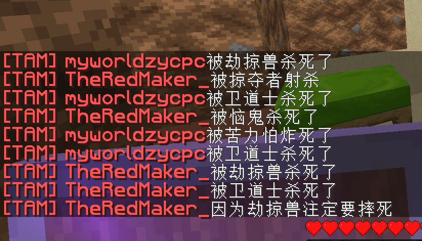

2022年2月3日
返回TheRedMaker_
TheRedMaker_根据我的提示，拿了好几组海带在海面上找地方做浮标，目的是为了引领我们去找到修建溺尸塔的位置。

TAM
准备开路去修建溺尸塔，结果发现了...“沉船”？

终于到了目的地。结果发现好多怪，为什么？随即迎来的是PVE大战。
难道是有刷怪笼？可是找了好久都没找到，开了旁观模式看了，确实没有。是天数问题？
Carry On 模组真好用，抓羊不用拴绳了。
据说战术性捕鱼，是不用鱼竿抓鱼
那我这样是不是也叫战术性捕鱼？

手撸TRM麦田怪圈

视距开到60，GPU占用100%，本来想剪辑视频的，结果Pr卡的不行
PVE大战告一段落，带回的战利品有一朵芳香四溢的玫瑰花
掠夺者进村啦！
不小心领了不祥之兆，我们去了草地村，奇怪的是袭击只有两波。于是我们又用指令给了一下不祥之兆，去了遗忘村（一座沙漠中的村庄，那里有TheRedMaker_的遗产）。结果袭击来的相当猛烈。

我们把遗产拿回来，有好多好东西，有黄金装备和附魔书。然后，我们整理了一下储物室，新增红石区，顶层也有了物品。
不祥之兆真不祥
当我们领回不祥之兆的时候，TheRedMaker_不小心清了背包，所以说不祥之兆真不祥，TheRedMaker_认为下一次有可能会是不小心把背包扔到岩浆里。